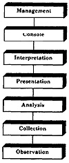
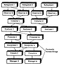

| Previous | Table of Contents | Next |
Most of the computer systems today are distributed and consist of many hardware and software components that work together separately and concurrently. Monitoring a distributed system is more difficult than monitoring a centralized system. In particular, the monitor itself must be distributed and should consist of several components that work separately and concurrently. In this section, the design issues and terminology related to such monitors are discussed. The discussion is based on an actual case study to design a network monitor. Although many of the examples in this section are from networks, the discussion is general and applies to all distributed systems, such as multicomputer systems and distributed database systems. Most of the discussion also aplies to nondistributed systems.
The easiest way to understand various components of a distributed-system monitor is to divide various functions in the monitor into a number of layers. Figure 7.1 shows such a layered view. Each layer makes use of the services provided by the lower layers and extends the available facilities to the upper layer. The layers are first briefly introduced. Later, each layer is discussed in detail. Proceeding from the bottom of Figure 7.1, the layers are as follows:

FIGURE 7.1 Layered view of a distributed-system monitor.
A monitor may consist of multiple (zero or more) components from each of the layers. Thus, as shown in Figure 7.2, it may consist of zero or more observers, collectors, analyzers, presenters, interpreters, consoles, and managers.
There is a many-to-many relationship between successive layers. For example, a single observer may send data to multiple collectors, and a single collector may gather data from multiple observers. Similar many-to-many relationships exist between collectors and analyzers, analyzers and presenters, presenters and interpreters, and so forth.
Most distributed-system monitors are hybrid and make use of software, hardware, and firmware as well as human beings. The observers may be implemented using software, hardware, or firmware. Collectors, analyzers, and presenters are usually implemented in software. The console may be a software package that can be called from any user workstation, or it can be a hardware component with special switches, knobs, and displays. The interpreters and managers are usually human beings, but as the system understanding improves, it should be possible to automate these functions.

FIGURE 7.2 Components of a distributed-system monitor.
The layers will now be described in more detail.
The bottom layer of the monitor, called observation, is concerned with raw-data gathering. Three commonly used data observation mechanisms are implicit spying, explicit instrumenting, and probing.
Implicit spying is the first and least intrusive monitoring technique. It requires promiscuously observing the activity on the system bus or network link. This technique is often used to monitor local-area networks in which all stations can hear all conversations, and one station is designated to be the observer. The advantage is that there is almost no impact on the performance of the system being monitored.
Implicit-spying observers are often accompanied by one or more filters that allow the monitor to decide which activities to record. Not all data observed in a system may be of interest at all times. The filters help decide whether to keep a record of an observed event or to ignore it. The filters generally consist of conditional expressions set by the monitor user. The conditions may be, for example, Boolean, arithmetic, or set membership.
Explicit instrumenting requires incorporating trace points, probe points, hooks, or counters in the system. This approach causes some overhead on the system and is used to augment the data obtained from implicit observing. Each component in the system that needs to be monitored may have to be instrumented differently. However, it helps to have a standard data-naming and reporting format so that other monitor components making use of this data can get it and use it in a device-independent manner.
Probing requires making “feeler” requests on the system to sense its current performance. For example, in a computer network, a specially marked packet sent to a given destination and looped back by the destination may provide information about queueing at the source, at intermediate bridges, the destination station, and back. This information is useful in determining the current load level on a path. It may also be used for diagnostic and reliability analysis.
Although there is considerable overlap in the domain of activities that can be observed using the three mechanisms, they are not totally redundant. There are activities that can be observed only by one of the three mechanisms. For example, requests to nonexistent devices may be observed only by implicit spying on the system bus. Explicit instrumentation is required to observe events internal to a component. Probing provides cumulative information about a number of components, which may be used by the feeler request. Therefore, in most systems, one would use a combination of the three data-observing mechanisms discussed above and pass the data to collectors, which are discussed next.
| Previous | Table of Contents | Next |
){kind=link}
){kind=link}
){kind=link}
){kind=link}